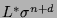
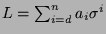
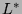
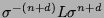

Usage
adjoint L
Signature
adjoint: % %
| Parameter | Type | Description |
|---|---|---|
| L | % | A difference operator |
Returns
Returns  where
is the adjoint of .
Remarks
adjoint is available only when the shift is an automorphism of R. Because adjoint(L) returns rather than the true adjoint , it follows that adjoint(adjoint(L)) returns  rather than L.